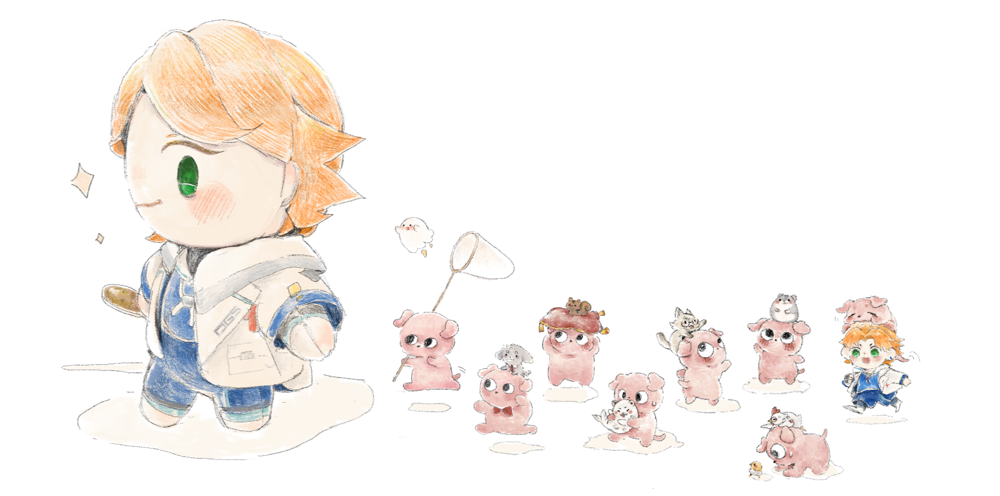
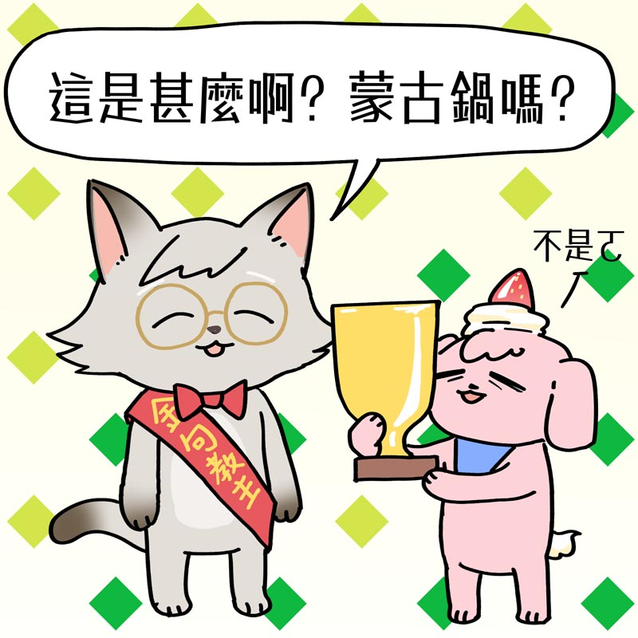
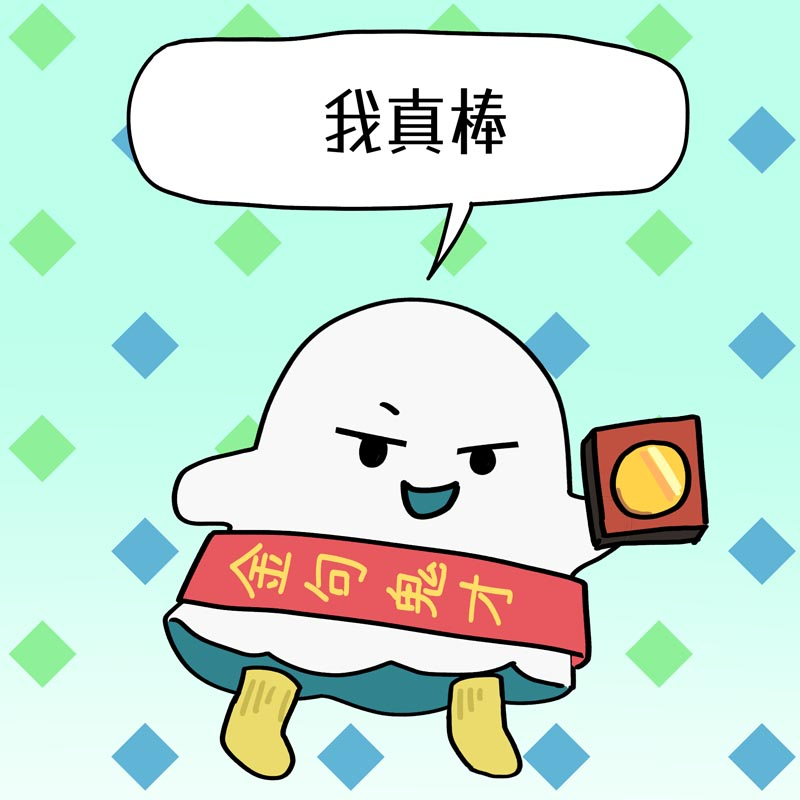

這是什麼壓縮檔！點它！

厭世醫師阿萬3rd.r1r
最愛音效
收到的列表
全部音效
提示：點音效即可播放；右鍵（或行動裝置長按）可分享/下載。
提示：點音效即可播放；右鍵（或行動裝置長按）可分享/下載。
本站由粉肝製作，並非由厭世醫師阿萬官方經營。音效內容皆是粉肝去脈絡式、斷章取義的剪輯，僅供娛樂。本站的音效皆屬於原作者厭世醫師阿萬，使用時須遵守厭世醫師阿萬的二次創作條例。
本站所提供的音軌混音，原初用意在於拼接對話製造虛構的搞笑內容用於娛樂。發布任何使用音軌混音的拼貼都必須正式聲明其虛構性。音軌混音禁止用於任何不當用途。
最後更新時間：2026/7/15。
阿萬本家→ 厭世醫師阿萬X、厭世醫師阿萬Youtube
SNS Hashtag：#萬籟聚集

插畫：Minie(Sigh)
感謝53、Kie在DC弄了一堆音效，讓南想到可以做這個網站，並在提出這個想法的一開始就弄了一堆音效過來。還有同樣感謝在原型階段就幫忙收集音效的米糕跟薰薰草。
感謝Jia繪製超可愛的頭貼、背景圖以及收集音效。
感謝粉肝們收集很多音效，豐富了這個網站（Word筆劃順）：
AmBinBong、Ame、CZ、HUI、Lococco de suzuran、MOSS、Nokimi07、Sigh、TENN、Yichen沉沉、🌙🐰月桂葉香包♏🎵、布丁(25:00)、米粉肉干、幸福柴柴、青末枝、食甜張、凌伊LingYi（01）、夏白衫、貓貓雨、ヤキィ。 以及其他回報問題、提出建議的粉肝們，你們讓這個網站的功能更完善。

